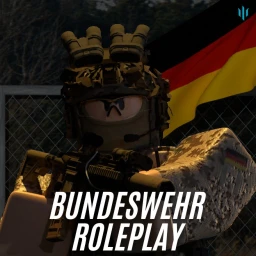

Wir führen aktuell planmäßige Wartungsarbeiten am Mainframe durch, um die Systemstabilität und Sicherheit zu gewährleisten.
Status: DEPLOYING CRITICAL UPDATES...
Dauer: Wir sind in Kürze wieder für Sie da.